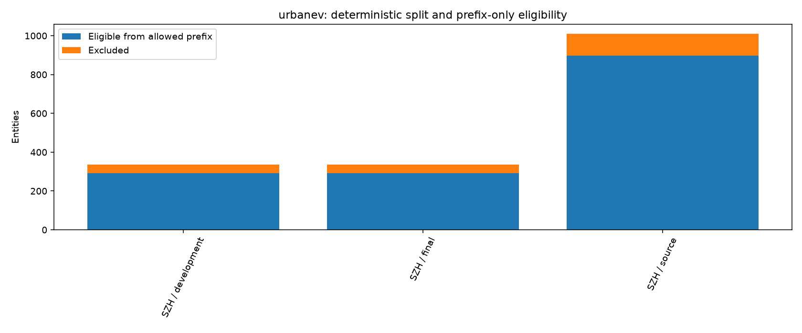
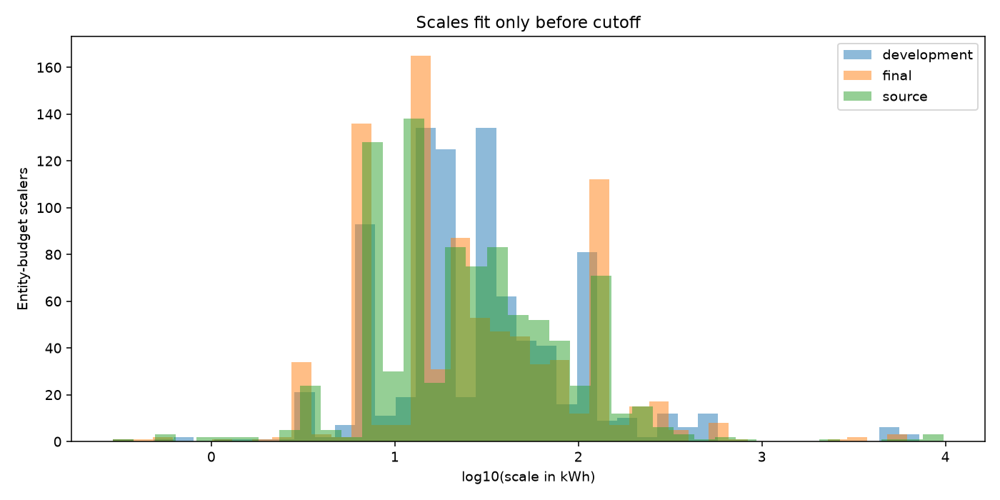
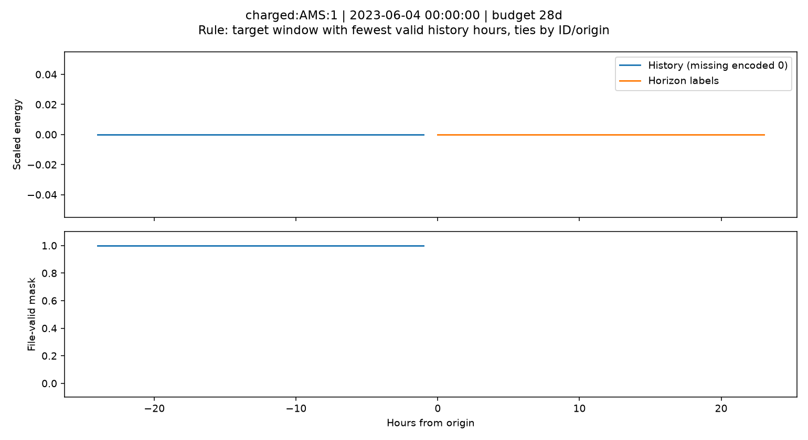
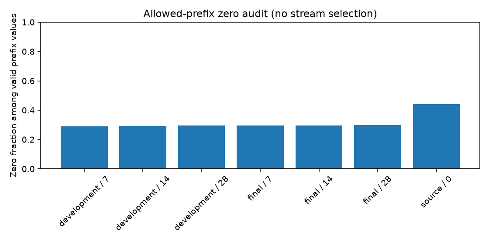

Adaptive Retention · đầu vào model
Published-data benchmark · 24→24 · hash split60/20/20 · budgets7/14/28
Không model training. Timezone, original masks và label arrival chưa xác minh; CHARGED Shenzhen chưa độc lập.
UrbanEV · CHARGEDRun bàn giao đã kiểm tra
| Dataset |
Source đủ/total |
Development đủ/total |
Final đủ/total |
Window records |
| urbanev |
898/1009 |
292/336 |
292/337 |
226486 |
| charged |
2567/2567 |
856/856 |
857/857 |
782616 |
Window records bao gồm budgets riêng. Source chỉ cần full24Y/nonemptyX; target cohort cần full48 trong warmup7 ngày. V1/partial được giữ để truy vết, không phải active.
URBANEV
226,486 window records · final eligible 292 · Report · QC

Split/cohort từ prefix được phép
Scales trước cutoff Window minh họa và file-valid mask
Window minh họa và file-valid mask Zero trong prefix, giữ zero series
Zero trong prefix, giữ zero series Missing và zero distributions trong prefix
Missing và zero distributions trong prefixCHARGED
782,616 window records · final eligible 857 · Report · QC
 Split/cohort từ prefix được phép
Split/cohort từ prefix được phép Scales trước cutoff
Scales trước cutoff
Window minh họa và file-valid mask
Zero trong prefix, giữ zero series Missing và zero distributions trong prefix
Missing và zero distributions trong prefix